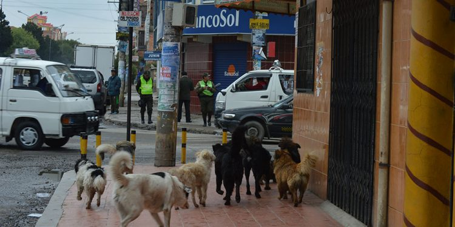
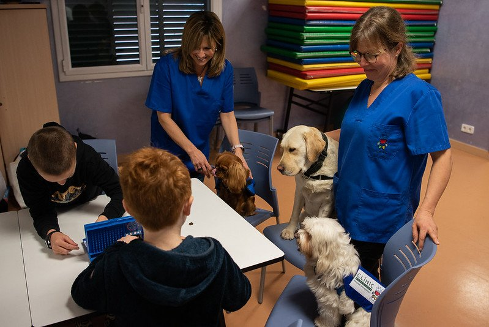
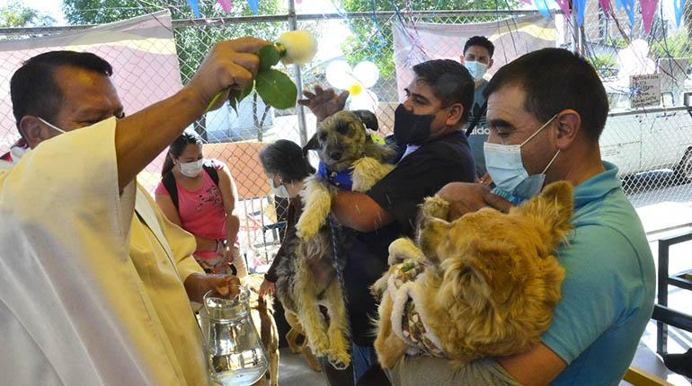
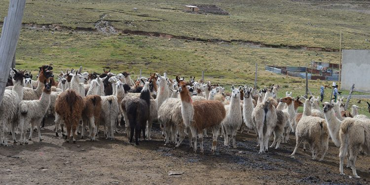

Municipio prepara norma de tenencia de mascotas
Miles de canes circulan por la urbe alteña, un día tuvieron dueño y hogar, pero por la irresponsabilidad fueron abandonados y ante la necesidad de alimentarse forman jaurías que llegan a ser agresivas y peligrosas para los vecinos alteños.
En el aula se habla poco, o nada, sobre los derechos de los animales
Esta semana compartimos en nuestra newsletter dos artículos muy diferentes entre sí, pero relacionados con el tema de la concientización sobre el respeto a los animales, en particular, los derechos de los animales de compañía quienes muchas veces son tratados como objetos que se pueden comprar y desechar como si fueran una prenda de vestir que ya no nos gusta o un juguete que ya no nos divierte.
En San Roque suman las voces que piden proteger a los perros
En el Día de San Roque, el santo de los enfermos y los perros, ayer los activistas y legisladores se enfocaron en pedir más protección para los perros ante el creciente comercio, maltrato y abandono.
Albergue y esterilización para canes abandonados
Autoridades del municipio, Pofoma y otras instituciones que tienen que ver con el cuidado de animales se reúnen para coordinar acciones que posibiliten la esterilización y un albergue para los canes abandonados del Distrito 13.
